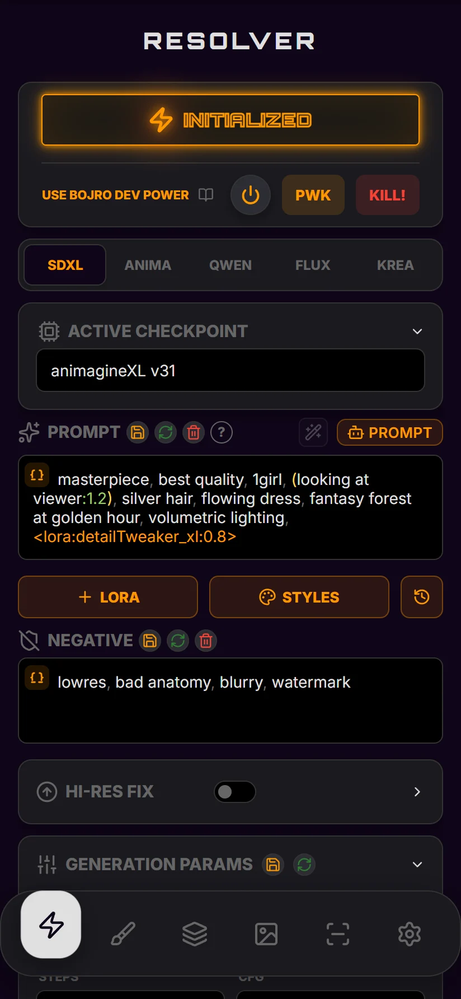

Resolver v3.0 · Documentation
Learn RESOLVER,
feature by feature.
Resolver turns your Android phone into a full remote control for Stable Diffusion running on your PC, through Forge or ComfyUI. These docs walk you through every tab, button and setting, with screenshots from the app.

What is Resolver?
Image generation needs a strong graphics card, so it runs on your PC. Resolver is the part you hold in your hand: you write prompts, choose models and settings, and watch images arrive on your phone. Your PC does the work; the app sends it the job and brings back the result.
Tour of the app
The app has a dock at the bottom, as on the phone. Tap the icons below the phone to see each tab. On Generate, try the model buttons too: each model tab has its own color, and so do these docs (also from the dots at the top).
In the app you can tap a tab, or put your finger on the dock and slide: the tab under your finger lifts up with its name, a light tick buzzes for each one you pass, and letting go switches to it. Sliding up off the dock cancels.
What Resolver can do
__name__ picks a random option for every image, with weights, nesting and rules. Import from files, links or Civitai.